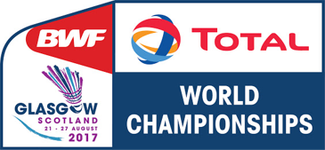

BADMINTON
Badminton is a racquet sport played using racquets to hit a shuttlecock across a net. Although it may be played with larger teams, the most common forms of the game are "singles" and "doubles".
Badminton Tournaments:
BWF WORLD CHAMPIONSHIP
The BWF World Championships is a badminton tournament sanctioned by Badminton World Federation. The tournament offers the most ranking points, together with Summer Olympics badminton tournaments. The winners will be crowned as the "World Champions" and awarded gold medals. However, it does not offer any prize money.

THOMAS CUP
The Thomas Cup, sometimes called the World Men's Team Championships, is an international badminton competition among teams representing member nations of the Badminton World Federation, the sport's global governing body.
Some Famous Badminton Players:
SAINA NEHWAL
Saina Nehwal is an Indian professional badminton singles player. A former world no. 1, she has won over 24 international titles, which includes eleven Superseries titles. Although she reached the world's 2nd in the 2009, it was only in 2015 that she was able to attain the world no 1.
P.V.SINDHU
Pusarla Venkata Sindhu is an Indian professional badminton player. Over the course of her career, Pusarla has won medals at multiple tournaments including Olympics and on the BWF circuit including a gold at the 2019 World Championships.